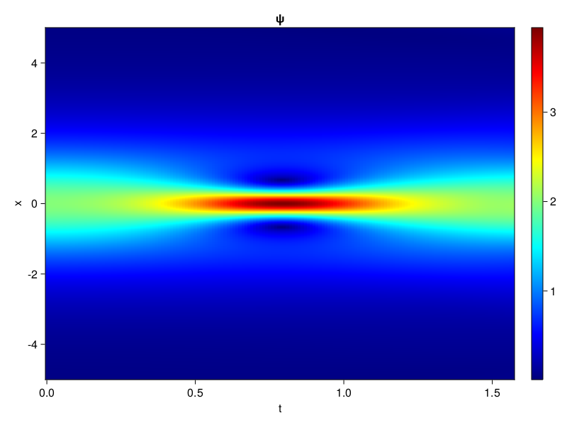
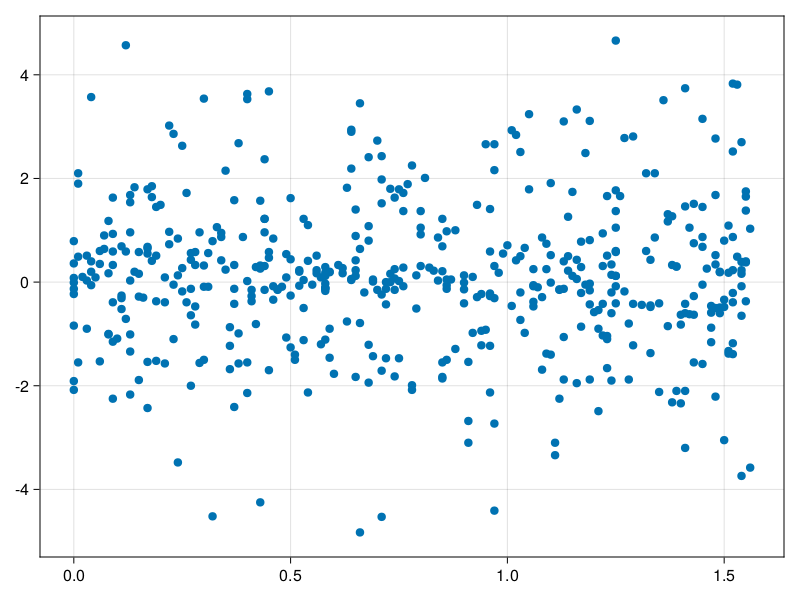

Schrödinger equation
The nonlinear Shrödinger equation is given by
\[\mathrm{i} \partial_t \psi=-\frac{1}{2} \sigma \partial_{x x} \psi-\beta|\psi|^2 \psi\]
Let $\sigma=\beta=1, \psi=u+v i$, the equation can be transformed into a system of partial differential equations
using ModelingToolkit, IntervalSets, Sophon, CairoMakie
using Optimization, OptimizationOptimJL
@parameters x,t
@variables u(..), v(..)
Dₜ = Differential(t)
Dₓ² = Differential(x)^2
eqs=[Dₜ(u(x,t)) ~ -Dₓ²(v(x,t))/2 - (abs2(v(x,t)) + abs2(u(x,t))) * v(x,t),
Dₜ(v(x,t)) ~ Dₓ²(u(x,t))/2 + (abs2(v(x,t)) + abs2(u(x,t))) * u(x,t)]
bcs = [u(x, 0.0) ~ 2sech(x),
v(x, 0.0) ~ 0.0,
u(-5.0, t) ~ u(5.0, t),
v(-5.0, t) ~ v(5.0, t)]
domains = [x ∈ Interval(-5.0, 5.0),
t ∈ Interval(0.0, π/2)]
@named pde_system = PDESystem(eqs, bcs, domains, [x,t], [u(x,t),v(x,t)])\[ \begin{align} \frac{\mathrm{d}}{\mathrm{d}t} u\left( x, t \right) =& - \frac{1}{2} \frac{\mathrm{d}}{\mathrm{d}x} \frac{\mathrm{d}}{\mathrm{d}x} v\left( x, t \right) - \left( \left|u\left( x, t \right)\right|^{2} + \left|v\left( x, t \right)\right|^{2} \right) v\left( x, t \right) \\ \frac{\mathrm{d}}{\mathrm{d}t} v\left( x, t \right) =& \frac{1}{2} \frac{\mathrm{d}}{\mathrm{d}x} \frac{\mathrm{d}}{\mathrm{d}x} u\left( x, t \right) + \left( \left|u\left( x, t \right)\right|^{2} + \left|v\left( x, t \right)\right|^{2} \right) u\left( x, t \right) \end{align} \]
pinn = PINN(u = Siren(2,1; hidden_dims=16,num_layers=4, omega = 1.0),
v = Siren(2,1; hidden_dims=16,num_layers=4, omega = 1.0))
sampler = QuasiRandomSampler(500, (200,200,20,20))
strategy = NonAdaptiveTraining(1,(10,10,1,1))
prob = Sophon.discretize(pde_system, pinn, sampler, strategy)OptimizationProblem. In-place: true
u0: ComponentVector{Float64}(u = (layer_1 = (weight = [0.1498875617980957 -0.14700186252593994; -0.367138147354126 -0.3669605851173401; … ; -0.3981856107711792 0.14566993713378906; -0.47084516286849976 0.2514638900756836], bias = [0.0; 0.0; … ; 0.0; 0.0;;]), layer_2 = (weight = [-0.08622502535581589 -0.02957490272819996 … 0.3649179935455322 0.41253527998924255; -0.2488887757062912 0.07549366354942322 … 0.34289178252220154 -0.3441479802131653; … ; -0.2242514044046402 0.43784284591674805 … 0.12771828472614288 0.26028701663017273; -0.3321041464805603 0.004636260215193033 … 0.03596843034029007 -0.5401723980903625], bias = [0.0; 0.0; … ; 0.0; 0.0;;]), layer_3 = (weight = [0.6065217852592468 -0.2933615446090698 … 0.5051277875900269 0.11504028737545013; 0.44688907265663147 0.3464805781841278 … -0.17028756439685822 -0.25280138850212097; … ; -0.4523453414440155 -0.21378657221794128 … 0.3702004551887512 0.41219931840896606; 0.3237166702747345 0.11510642617940903 … 0.228683203458786 -0.37851229310035706], bias = [0.0; 0.0; … ; 0.0; 0.0;;]), layer_4 = (weight = [0.5395768880844116 0.27051421999931335 … 0.5732660889625549 0.11097715049982071; -0.3428078293800354 -0.010615364648401737 … 0.3159800171852112 0.015017074532806873; … ; -0.13012634217739105 0.46162283420562744 … -0.40255260467529297 -0.45650798082351685; -0.49764177203178406 0.15055596828460693 … 0.27513033151626587 0.39529702067375183], bias = [0.0; 0.0; … ; 0.0; 0.0;;]), layer_5 = (weight = [0.6087011098861694 0.07913492619991302 … -0.4996581971645355 -0.47757890820503235], bias = [0.0;;])), v = (layer_1 = (weight = [-0.05833399295806885 -0.2972436547279358; 0.20331013202667236 0.1342705488204956; … ; 0.26967155933380127 -0.17837929725646973; 0.10289829969406128 -0.29353177547454834], bias = [0.0; 0.0; … ; 0.0; 0.0;;]), layer_2 = (weight = [-0.26272857189178467 0.27175647020339966 … -0.5460429787635803 0.06018407642841339; -0.5083357095718384 0.34777209162712097 … -0.20090848207473755 -0.5241926908493042; … ; 0.508120059967041 0.12522728741168976 … 0.3004728853702545 0.3442302644252777; 0.5844748020172119 -0.20957882702350616 … 0.5386902689933777 -0.23359175026416779], bias = [0.0; 0.0; … ; 0.0; 0.0;;]), layer_3 = (weight = [0.4741095006465912 0.359308123588562 … -0.2895728349685669 0.39416345953941345; 0.5318475365638733 -0.4210011959075928 … -0.5293708443641663 0.5489220023155212; … ; 0.01878127083182335 0.11994263529777527 … 0.27870553731918335 0.24079222977161407; 0.3195248544216156 0.09543301165103912 … -0.008429072797298431 -0.38595566153526306], bias = [0.0; 0.0; … ; 0.0; 0.0;;]), layer_4 = (weight = [-0.576866865158081 -0.6119390726089478 … -0.1359337568283081 -0.1408839225769043; -0.44081026315689087 0.08058939129114151 … -0.01079859584569931 -0.33227962255477905; … ; 0.17935144901275635 0.49369966983795166 … 0.24435341358184814 -0.5699629783630371; -0.13455235958099365 0.362369567155838 … -0.37316757440567017 -0.39501237869262695], bias = [0.0; 0.0; … ; 0.0; 0.0;;]), layer_5 = (weight = [-0.3920375406742096 -0.19539935886859894 … -0.10640440136194229 0.41757506132125854], bias = [0.0;;])))Now we train the neural nets and resample data while training.
function train(pde_system, prob, sampler, strategy, resample_period = 500, n=10)
bfgs = BFGS()
res = Optimization.solve(prob, bfgs; maxiters=2000)
for i in 1:n
data = Sophon.sample(pde_system, sampler)
prob = remake(prob; u0=res.u, p=data)
res = Optimization.solve(prob, bfgs; maxiters=resample_period)
end
return res
end
res = train(pde_system, prob, sampler, strategy)u: ComponentVector{Float64}(u = (layer_1 = (weight = [0.4328313376341947 -0.2314265744393839; -0.38808076022573285 -0.2828043503888989; … ; -0.5142779326033831 0.09808067532519807; -0.44663734037942593 -0.09543024461610755], bias = [0.4234265817851088; 0.14883106177309555; … ; 0.014962136356599034; 0.09777425272935299;;]), layer_2 = (weight = [-0.34083029161772976 0.10564776220034355 … 0.48673137184161686 0.4666610011077965; -0.3947709293396261 0.15692257034228152 … 0.34690861891966457 -0.24037097958560164; … ; -0.26858174683305863 0.6475177430867156 … 0.3548674525976764 0.408145584164693; -0.4893471308444818 -0.026708608828482756 … 0.11329393457804299 -0.41474697923076914], bias = [-0.23629418483339354; 0.22366742299603667; … ; -0.08425296047668239; -0.2199596185289029;;]), layer_3 = (weight = [0.8432608739260274 -0.5077053229562981 … 0.21131254370094127 0.028957838132025605; 0.6422377217459009 0.051327279035408034 … -0.05926370275217909 -0.17843717589233954; … ; -0.45021187171626575 -0.03403486086574629 … -0.11297860925986317 0.6194396063454017; 0.2737260356133558 0.07896031366082115 … 0.3001351853691861 -0.31722871459204], bias = [0.6354992177372552; 0.13812160449368982; … ; -0.17835764382548483; 0.1190785844533455;;]), layer_4 = (weight = [-0.046901416252206514 0.2855331653308408 … 1.0131365937891286 0.3716939399455026; -0.6121478252951851 -0.006500039426591223 … 0.436868436863852 0.16631425360796487; … ; 0.0193143430001062 0.43910302770311865 … -0.6750898953603892 -0.20437754386107385; -0.8939155007013336 0.0020823606635046172 … 0.313137173489888 0.49317868141106835], bias = [0.14518885778573756; -0.1426628753160847; … ; 0.34924964924333546; -0.06205193056216445;;]), layer_5 = (weight = [0.7408966819140234 0.24851558784432806 … -0.7914752037568369 -0.527763924860904], bias = [0.2839538565779197;;])), v = (layer_1 = (weight = [0.2699203144283587 0.46191376534311324; 0.23430031452441483 0.22012233466618822; … ; 0.5445881378947455 -0.10230402816025043; 0.38958386206263246 -0.08044660317555644], bias = [-0.062305124928069236; -0.06607931679107977; … ; 0.14835443898455836; -0.07869771574640773;;]), layer_2 = (weight = [-0.1786760172815932 0.2707051861233359 … -0.5752199225743057 -0.046361253670141926; -0.6217981253586892 0.07102631883620007 … -0.2363602723934915 -0.4449930371828785; … ; 0.5925359473023757 0.08657714837160935 … 0.11049768471416872 0.4037352907640237; 0.5505963563857927 -0.02504657748768018 … 0.5318635049012655 -0.2494043375523776], bias = [0.09173306377434173; -0.14382488929574974; … ; 0.2951363591268397; 0.01162163829347028;;]), layer_3 = (weight = [0.34769077924162467 0.256172855213623 … -0.42883247850544987 0.2089434970595543; 0.6016692540836858 -0.27242768464513806 … -0.4911510428290389 0.3588008484123457; … ; -0.506487426770471 0.6381987671305982 … 0.4149076306251043 0.43277140022606514; 0.12195175886574998 -0.002973742894091774 … 0.04009304465509908 -0.47348014704266256], bias = [0.15751350833217365; 0.25666274989553983; … ; 0.5201622416794927; -0.2812156347053946;;]), layer_4 = (weight = [-0.6126825964179407 -1.101496885184744 … -0.07068677249013212 -0.22285555408922172; -0.4899069078089296 -0.0004652619870214167 … -0.22427578203188017 -0.30420201366948607; … ; 0.18648737230412146 0.48410118975353583 … 0.30536956426511513 -0.47398026929946957; -0.15744287531880055 -0.019418256330120252 … 0.18604084381085287 -0.4215266058947784], bias = [-0.1426264095340318; 0.14925773070883216; … ; -0.059198281998702404; -0.23497832778713348;;]), layer_5 = (weight = [-0.5071343082279437 -0.5008195439089408 … 0.004121897198717857 0.5117677144835621], bias = [-0.060055136271001;;])))phi = pinn.phi
ps = res.u
xs, ts= [infimum(d.domain):0.01:supremum(d.domain) for d in pde_system.domain]
u = [sum(phi.u(([x,t]), ps.u)) for x in xs, t in ts]
v = [sum(phi.v(([x,t]), ps.v)) for x in xs, t in ts]
ψ = @. sqrt(u^2+ v^2)
axis = (xlabel="t", ylabel="x", title="u")
fig, ax1, hm1 = heatmap(ts, xs, u', axis=axis)
ax2, hm2= heatmap(fig[1, end+1], ts, xs, v', axis= merge(axis, (; title="v")))
display(fig)
axis = (xlabel="t", ylabel="x", title="ψ")
fig, ax1, hm1 = heatmap(ts, xs, ψ', axis=axis, colormap=:jet)
Colorbar(fig[:, end+1], hm1)
display(fig)
Customize Sampling
Bascially any sampling method is supportted. For example we can sample data according to the predicted solution.
using StatsBase
data = vec([[x, t] for x in xs, t in ts])
wv = vec(ψ)
new_data = wsample(data, wv, 500)
new_data = reduce(hcat, new_data)
fig, ax = scatter(new_data[2,:], new_data[1,:])
prob.p[1] = new_data
prob.p[2] = new_data
prob = remake(prob; u0 = res.u)
# res = Optimization.solve(prob, bfgs; maxiters=1000)OptimizationProblem. In-place: true
u0: ComponentVector{Float64}(u = (layer_1 = (weight = [0.4328313376341947 -0.2314265744393839; -0.38808076022573285 -0.2828043503888989; … ; -0.5142779326033831 0.09808067532519807; -0.44663734037942593 -0.09543024461610755], bias = [0.4234265817851088; 0.14883106177309555; … ; 0.014962136356599034; 0.09777425272935299;;]), layer_2 = (weight = [-0.34083029161772976 0.10564776220034355 … 0.48673137184161686 0.4666610011077965; -0.3947709293396261 0.15692257034228152 … 0.34690861891966457 -0.24037097958560164; … ; -0.26858174683305863 0.6475177430867156 … 0.3548674525976764 0.408145584164693; -0.4893471308444818 -0.026708608828482756 … 0.11329393457804299 -0.41474697923076914], bias = [-0.23629418483339354; 0.22366742299603667; … ; -0.08425296047668239; -0.2199596185289029;;]), layer_3 = (weight = [0.8432608739260274 -0.5077053229562981 … 0.21131254370094127 0.028957838132025605; 0.6422377217459009 0.051327279035408034 … -0.05926370275217909 -0.17843717589233954; … ; -0.45021187171626575 -0.03403486086574629 … -0.11297860925986317 0.6194396063454017; 0.2737260356133558 0.07896031366082115 … 0.3001351853691861 -0.31722871459204], bias = [0.6354992177372552; 0.13812160449368982; … ; -0.17835764382548483; 0.1190785844533455;;]), layer_4 = (weight = [-0.046901416252206514 0.2855331653308408 … 1.0131365937891286 0.3716939399455026; -0.6121478252951851 -0.006500039426591223 … 0.436868436863852 0.16631425360796487; … ; 0.0193143430001062 0.43910302770311865 … -0.6750898953603892 -0.20437754386107385; -0.8939155007013336 0.0020823606635046172 … 0.313137173489888 0.49317868141106835], bias = [0.14518885778573756; -0.1426628753160847; … ; 0.34924964924333546; -0.06205193056216445;;]), layer_5 = (weight = [0.7408966819140234 0.24851558784432806 … -0.7914752037568369 -0.527763924860904], bias = [0.2839538565779197;;])), v = (layer_1 = (weight = [0.2699203144283587 0.46191376534311324; 0.23430031452441483 0.22012233466618822; … ; 0.5445881378947455 -0.10230402816025043; 0.38958386206263246 -0.08044660317555644], bias = [-0.062305124928069236; -0.06607931679107977; … ; 0.14835443898455836; -0.07869771574640773;;]), layer_2 = (weight = [-0.1786760172815932 0.2707051861233359 … -0.5752199225743057 -0.046361253670141926; -0.6217981253586892 0.07102631883620007 … -0.2363602723934915 -0.4449930371828785; … ; 0.5925359473023757 0.08657714837160935 … 0.11049768471416872 0.4037352907640237; 0.5505963563857927 -0.02504657748768018 … 0.5318635049012655 -0.2494043375523776], bias = [0.09173306377434173; -0.14382488929574974; … ; 0.2951363591268397; 0.01162163829347028;;]), layer_3 = (weight = [0.34769077924162467 0.256172855213623 … -0.42883247850544987 0.2089434970595543; 0.6016692540836858 -0.27242768464513806 … -0.4911510428290389 0.3588008484123457; … ; -0.506487426770471 0.6381987671305982 … 0.4149076306251043 0.43277140022606514; 0.12195175886574998 -0.002973742894091774 … 0.04009304465509908 -0.47348014704266256], bias = [0.15751350833217365; 0.25666274989553983; … ; 0.5201622416794927; -0.2812156347053946;;]), layer_4 = (weight = [-0.6126825964179407 -1.101496885184744 … -0.07068677249013212 -0.22285555408922172; -0.4899069078089296 -0.0004652619870214167 … -0.22427578203188017 -0.30420201366948607; … ; 0.18648737230412146 0.48410118975353583 … 0.30536956426511513 -0.47398026929946957; -0.15744287531880055 -0.019418256330120252 … 0.18604084381085287 -0.4215266058947784], bias = [-0.1426264095340318; 0.14925773070883216; … ; -0.059198281998702404; -0.23497832778713348;;]), layer_5 = (weight = [-0.5071343082279437 -0.5008195439089408 … 0.004121897198717857 0.5117677144835621], bias = [-0.060055136271001;;])))